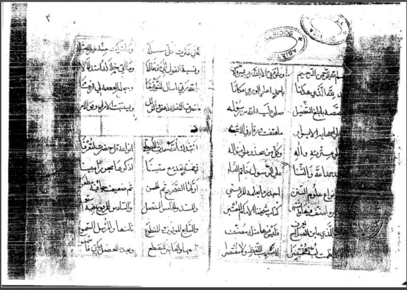
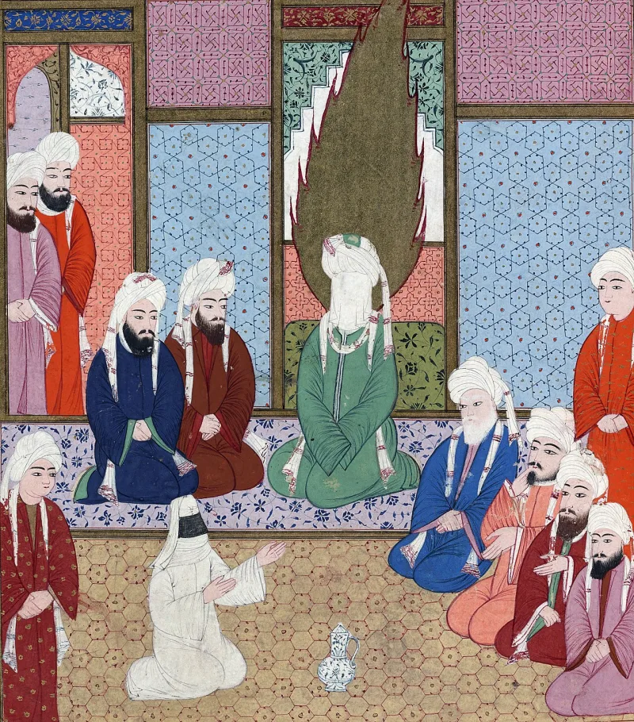

Muslim scholars have a real answer here. Say so before your friend does.
Allah rebukes Muhammad: "O Prophet, why do you prohibit what Allah has made lawful for you, seeking the approval of your wives?" (Quran 66:1). The oath is then dissolved (66:2).
His wives are warned that if he divorces them, Allah will give him better ones (66:5).
Sunan an-Nasa'i 3959, graded sahih by al-Albani, gives one account. Muhammad was with his slave woman, identified in tafsir as Mariya the Copt, in Hafsa's quarters or on her day.
Aisha and Hafsa pressed him until he swore Mariya forbidden to himself. Then revelation came and freed him from the oath.
Sahih al-Bukhari 4912 gives a different occasion, involving only honey.
Most scholars prefer the honey account, and Ask Ghamidi sets out why. Aisha herself narrates a scheme about a honey drink at Zaynab's house, in Bukhari and Muslim, and the best-attested report should fix the context.
The Mariya reports are treated as aberrant or as later reconstructions. Occasion-of-revelation reports are also fluid.
On substance, the surah shows Muhammad's humanity and Allah's correction — he is rebuked, not indulged. And the rule it sets, that you may not make the lawful unlawful by oath, is sober law, with expiation prescribed (66:2; compare 5:89).
Genuinely arguable, and do not overclaim. The honey account is better attested.
But al-Albani's grading of Nasa'i 3959 means Muslims cannot simply wave the other away.
Use the pattern, not the incident. Even on the friendliest reading, a chapter of eternal scripture handles friction in the household, dissolves an oath, and warns the wives they can be replaced (66:5).
Put beside Quran 33:37 and 33:50-51, the cumulative shape is what carries weight.
"Surah 66 settles a quarrel at home. Does it strike you as odd that a scripture does that?"


They say the honey story is the better report, and Mariya does not belong here.
Muslim scholars mostly prefer the honey account in Bukhari and Muslim as the surah's occasion. Ask Ghamidi sets out the reasoning. Aisha herself narrates a jealous scheme about a honey drink at Zaynab's house. The best-attested report should fix the context.
The Mariya narrations, they argue, are odd ones out — shadhdh, irregular — or later accounts run together. And even if some chain is technically sound, reports about the occasion of a revelation are famously fluid.
On the substance, the surah shows Muhammad's humanity and Allah's correction. He is rebuked, not indulged. And the rule it lays down is sober law: you may not make the lawful unlawful by an oath. A payment to release the oath is prescribed (66:2), matching Quran 5:89.
Use the pattern, not the incident: the honey account is better attested.
This is graded contested honestly. The honey narration is the better-attested occasion. Christians should not overclaim the Mariya version. Yet al-Albani graded Nasa'i 3959 sahih, so Muslims cannot simply wave it away either.
But even on the reading kindest to Islam, the pattern stands on the Quran's face. A chapter of eternal scripture is given to a quarrel at home. It dissolves his oath. It warns his wives that they can be replaced (66:5). Put it beside 33:37 and 33:50-51, already in this app. Revelation keeps bending toward the prophet's own comfort. The whole pattern carries the weight, not the single incident.